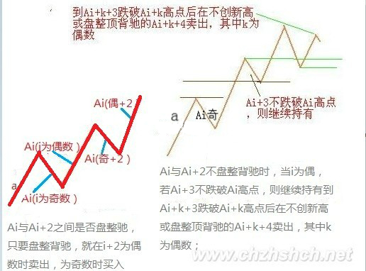
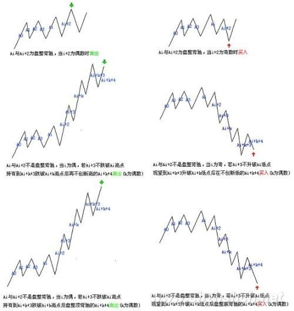
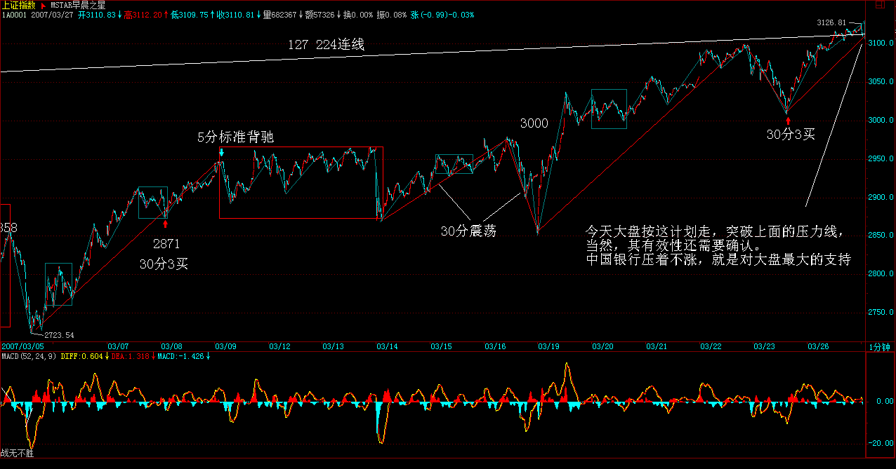
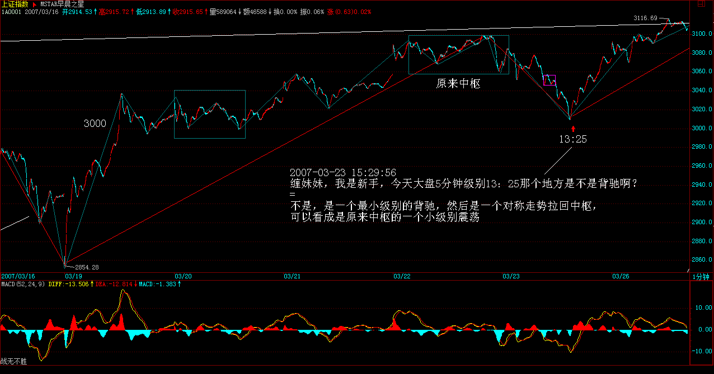

教你炒股票39：同级别分解再研究

(2007-03-23 15:16:51)
（注：38课针对后期递归级别的5分同级别分解，39课针对后期递归级别的1分同级别分解）
（注：此课文漏掉Ai与Ai+2不新高新低买卖点的分类)
股票都是废纸，还怕有钱买不着废纸？因此，对于任何操作来说，只要赚钱卖出，是无所谓错误的；反过来，股票是吸血的凭证，没这凭证，至少在股票市场里是真吸不了血的，因此，只要卖了能低价位回补，就无所谓错误。至于卖了可能还涨，回补可能还跌，这是技术的精确度问题，就像练短跑，如果你永远只会撒腿乱跑，那你不可能达到高层次，而基础的练习都很枯燥，甚至100米，每段怎么跑，多少步，可能都要按一个机械的要求来，最终形成一个韵律，这才有可能达到高层次。股票的操作一样，首先就要培养这样一个韵律，不排除在这个培养、训练的过程中，开始还比不上以前撒腿乱跑的速度，但坚持下去，等韵律感形成，那进步就不是撒腿乱跑的能比了。
上节说了一个机械的操作程式，这就有一个基本的韵律，其中最大的就是向上段先买后卖与向下段先卖后买的韵律，如果这个韵律都错了，那操作就一团糟。很多人的买卖其实都是靠天吃饭，买了，赌的就是上下两面，因此不管位置、不管时间、不管当下的走势结构，胡乱瞎买，然后又胡乱瞎卖。大的韵律把握了，还有就是每向上向下段中每小段间操作的韵律，显然，只要其中一步错了，这舞步就乱了。这时候，唯一正确的选择就是停止操作，先把心态、韵律调节好了才继续。而且，当你按这个机械节奏不断操作下去，人身体的生物节奏都会慢慢有所感应，甚至可以达到这种程度，就是那种该操作的图形出现时，生理上就仿佛有感应一般。其实，这一点都不神秘，就好象有些人睡觉，无论多晚，早上到点都会自动醒来，而股票的操作，都有一定的紧张度，而同级别走势类型分解的节奏，大致有一定的周期性，长期下来，生理上有自然的反应就一点都不奇怪了。
注意，下面的分析，如果对数学推理陌生的，大概要迷糊透，所以请先准备纸和笔，对着画图，才能搞清楚。
（买卖）
按同级别分解操作，还可能有更广泛、更精确的操作。对5分钟的同级别分解，以最典型的a+A为例子，一般情况下，a并不一定就是5分钟级别的走势类型，但通过结合运算，总能使得a+A中,a是一个5分钟的走势类型，而A，也分解为m段5分钟走势类型，则A=A1+A2+..+Am。
想考虑a+A是向上的情况，显然，Ai当I为奇数时是向下的，为偶数时是向上的，开始先有A1、A2出现，而且A1不能跌破a的低点，如果A2升破a的高点而A3不跌回a的高点，这样可以把a+
A1+A2+A3当成一个a`，还是5分钟级别的走势类型。因此，这里可以一般性地考虑A3跌破a的高点情况，这样，A1、A2、A3必然构成30分钟中枢。因此，这一般性的a+A情况，都必然归结为a是5分钟走势类型，A包含一30分钟中枢的情况。
把a定义为A0，则Ai与Ai+2之间就可以不断地比较力度，用盘整背驰的方法决定买卖点。这和前面说的围绕中枢震荡的处理方法类似，但那不是站在同级别分解的基础上的。注意，在实际操作中下一个Ai+2是当下产生的，但这不会影响所有前面Ai+1的同级别唯一性分解。这种机械化操作，可以一直延续，该中枢可以从30分钟一直扩展到日线、周线甚至年线，但这种操作不管这么多，只理会一点，就是Ai与Ai+2之间是否盘整背驰，只要盘整背驰，就在i+2为偶数时卖出，为奇数时买入。如果没有，当i为偶，若Ai+3不跌破Ai高点，则继续持有到Ai+k+3跌破Ai+k高点后在不创新高或盘整顶背驰的Ai+k+4卖出，其中k为偶数；当i为奇数，若Ai+3不升破Ai低点，则继续保持不回补直到Ai+k+3升破Ai+k低点后在不创新低或盘整底背驰的Ai+k+4回补。(娇注：此处漏掉Ai与Ai+2不新高新低的分类）。看完上面这段，至少90%以上的人都心跳加速，头晕眼花。不过没办法，这是最精确的表述，画着图应该不难明白。以上的方法，最大的特点是，就是在同级别分解的基础上将图形基本分为两类，一类是“当i为偶Ai+3不跌破Ai高点”或“i为奇数Ai+3不升破Ai低点”；一类是“Ai与Ai+2之间盘整背驰”。对这两种情况采取不同的操作策略，构成了一种机械的操作方法。
（注：同级别分解盘背的判断看最近的同方向段以及中枢前的同方向段两种）
(注：简言之，即为同级别分解中相邻的上段与上段，下段与下段之间比较盘背以及有无新高新低进行买卖操作；没有盘背就等同级别分解的段组成中枢后(小转大现象）中枢前后的段比较盘背或者不创新高新低进行买卖操作。这里的段为同级别分解下的走势类型）
（注：同级别分解注意点： 1段间判断新高新低 2段间判断有无盘背 3无盘背等3段形成中枢后看中枢前后段或相邻段间判断无新高和盘背。段为同级别分解下的走势类型）
(注：同级别分解段间无盘背继续持有忍受同级别反向完成后看盘背或者不新高卖出以及升级到高级别中枢按高级别同级别分解）
（注：对于前段的高点，相邻对比段若没有盘背，但是不创新高，也为卖出点。低点反过来）

每日解盘（2007-03-23 15:18:15 ）

缠中说禅：
2007-03-23
15:18:15 今天大盘没什么可说的，周四、周五的血战已经在周三提前预告。今天中行主动示弱，不让汉奸有借利好出货的机会，为大盘以后的发展留下很大的余地。不过汉奸不会因为这两天的折腾而死心，那两个高点的连线依然在上面，没有效突破前，依然会人心浮动，汉奸依然会随时发难，所以耐心是最重要的，而震荡是稳定人心的最好办法。
各股方面，具体的不能说了，免得汉奸有口实，最近打小报告的人忒多，而这又是汉奸的强项。反正前面说的那五个板块，加上最近说的旅游、科技之类的都会陆续表现的。瓜田李下，本ID就不多说，说的都是梦话，如此而已。
每日解盘（2007-03-26 15:20:49 ）
缠中说禅：
2007-03-26 15:20:49 今天大盘按这计划走，突破上面的压力线，当然，其有效性还需要确认。中国银行压着不涨，就是对大盘最大的支持，汉奸想捣乱也没机会，其他板块不断轮动，今天10元上下的二线股表现很好，这个势头应该延续。
一个最好玩的事情，今天已经有人通过某些渠道散风给本ID，说明天是上次大跌的一个月纪念，又是星期二，明天要全力砸盘，把本ID给毁了，本ID等着，本ID只点火，决不死顶，今天是全民启动，就看汉奸明天怎么表演。
个股不说了，三线里有真正题材的还会涨，其他风险，最主要是监管风险比较大。二线是目前最好的选择，10元上下，如果业绩特别好的，在15元上下也可以，都是今后行情的重点。如果不会找，看300成分股，在相应区间不难找到。

缠中说禅：
2007-03-23
15:23:50
[匿名] 首钢股份
2007-03-23 15:19:26
女王！！亏死了，汉奸这么无能，我白白腾出资金一个也补上！
女王够恨的，北京旅游连个建仓的机会都不给我啊！！
[匿名] CCTV
2007-03-23 15:19:53
妹子，你的000802太厉害，777也很牛呀。
=
本ID只在梦中说要去北京旅游，醒来才发现原来就在北京，什么北京旅游，本ID不知道，现在正打击庄家，本ID可没那本事当庄家。本ID这里只说梦话，什么都没说。
缠中说禅：
2007-03-23
15:27:33
[匿名] 新年好
2007-03-23 15:22:35
[匿名] 大盘
2007-03-23 15:17:25
对于我们小资金散户，我发现如果2-3％的超短差也不想放过的话，估计买入股票的时候就得考虑T+1因素了，不知大家有什么方法，
特别在下午2：40点以后，3买或者2买接近形成（出现底背离段了），但是还没有彻底走完的情况下，因为如果次日买入，虽然大涨，但是可能次日就又会出现一个可观的回试低点。
如果是当天买入，又害怕3买没有真正形成，继续下探回到原来中枢。
昨天和今天600178的表现就是我所表述的一个例子
----------
我也有大盘同学的这个疑问，我今天是每到一个低点就补一些，这样下来成本是高了点，但是比着踏空好点。
==
只要你不是买到最低那一笔，总有被套的时候，只要大方向不错就没问题。如果怕，就分两笔，这样就没必要怕了。
缠中说禅2007-03-23 15:38:46 [举报]
[匿名] 缠迷
2007-03-23 15:29:56
缠妹妹，我是新手，今天大盘5分钟级别13：25那个地方是不是背驰啊？谢谢
=
不是，是一个最小级别的背驰，然后是一个对称走势拉回中枢，可以看成是原来中枢的一个小级别震荡

缠中说禅：
2007-03-23
15:33:09
[匿名] 塔
2007-03-23 15:28:39
老大上市既布局的601333,今日派上用场了
禅理论告诉我们 601333放量突破上市以来的高点
同学们 上啊！！！！！！！！！！！！！！！！！！
==
对付汉奸的武器多着，其他去年很牛，这几个月严重调整的板块，也会动的。所以前段时间才说，不能光炒三线，比价在那里，靠假消息乱搞，等于帮助汉奸。
不过，散户不一定买指标股，因为相对还是慢点，可以多关注10元上下的二线股，只要盘整足够，重新有启动迹象的，都可以关注。
缠中说禅：
2007-03-23 15:40:49
[匿名] 新手却是老粉丝
2007-03-23 15:33:36
楼主好,我几乎天天都来这看看您们,但最近才有时间学习股票理论.中枢的概念我大致清楚了,可是一旦打开图时就SHA了,图里尽是高高低低的,不知怎么样去找相关的中枢,是目测?还是用"区间统计"?
==
你首先要搞清楚级别，然后搞清楚中枢定义的递归方法，这是最基础的，课程里都有。
缠中说禅：
2007-03-23
15:44:46
[匿名] 酒吧心情
2007-03-23 15:28:02
JJ好,今天帮同时练了一下000938,在下午的时候抓了个12.20,虽然不是很精确,但是小有收获.
目前的问题是个股配合大盘的问题.
如果选择大盘股票,比较稳妥,看图行事.
但是如果选择个股,特别是对指数灵敏度高的,在现在的高位,虽然看到小级别买点,但总是怕大盘单边跌,然后在T+1的模式下很难获利.
希望JJ 能够指点,怎么样在这种高位踩准节奏.
==
这几堂课就是说这个问题，你必须有一定的节奏韵律。例如，高位没走，低位去回补等于加仓，这样不好，一定要搞清楚向下段与向上段。特别资金不大的，卖就全买，回补如果信心不足，可以分单回补。只要是先卖的，回补起来就不会害怕了。所以节奏是第一的，你跳舞，节奏全乱，会有好心情、好心态吗？
缠中说禅：
2007-03-23
15:48:58
[匿名] christine
2007-03-23 15:42:07
对不起，缠主，我的问题不该这么问，二线蓝筹是从沪深300中找还是？能否给个明示。谢谢！
==
前段时间成分股调整比较多，当然更有机会表现。
缠中说禅：
2007-03-23
15:53:51
[匿名] 缠迷
2007-03-23 15:50:46
缠妹妹（我40岁了，不知道这么称呼你可以不，呵呵），我想问下，5、15、30、60这几个级别哪个级别发生背驰买股票把握最大。我是新手啊，大家别笑话我问的没有技术含量啊，呵呵。
==
临走回答一下，事情没有那么机械，还有a+B变成a`+B的情况，你必须把前面的课程看一遍，彻底消化，一两句话没法说清楚。
先下，再见。
新浪网友：
2007-03-23
17:16:18
找到一个旧帖
++++++++++++++++++++++++++++++++++++++++++++++++
喜欢数学的女孩
本女的存在至少有一个意义，就是让全世界男人知道自己的无知、无能。为了让全世界男人输得心服口服，本女就设擂台挑战全世界男人，不用男人去生孩子，就用男人自以为是的长期糊弄人的所谓各类知识/技能/学问。擂台既然是本女所设，规则当然也是本女定，本女的地盘当然是本女做主，规则只有一条，上擂者必须一关关过，过不了前面的就没资格继续下去，请走开！另外，本女是中国人，当然只用中文，其它乱七八糟的鸡毛鸭肠，谁爱谁用！
第一关：
诗：按题步韵本女所写的诗4组，这些诗曾在网上随意帖过，本女写得好的都不会在网上帖的，在本女所写中，这些最多只能算是中驷，但应付男人足够了。4组分别是涵盖历史/现实/情感/悟境，范围应该够了。
润之
润之年少傲王侯，意气激扬凌九州。万里驱云归狭岛，十年掀浪卷全球。
曾经天地齐同力，毕竟英雄不自由。世界三分槐蚁梦，湘江无语水空流。
东南
东南万里海浮天，一裂金瓯百五年。未葬鱼龙今古血，翻生蛤蜃晓昏烟。
华夷衰盛忝唐杰，风雨苍黄思郑贤。十亿神州重抖擞，昆仑拔掷浪波填。
出差南昌恰逢中秋
灯火喧城人落寞，歌弦酣处独彷徨。满江明月寒如痛，彻夜碧天深似狂。
风影楼台风影定，镜花世界镜花长。情迷今古梦犹梦，空首惊回秋半霜。
缠中说禅
渺渺天涯渺渺秋，绮霞烟水自空流。谁怜西岭西风后，满地相思满地愁！
满城风雨满城秋，一水横空天地流。独上孤峰倾百斗，披云啸尽古今愁。
一番风雨一番秋，依旧青山枕碧流。溅血长虹贯天地，羲和鞭堕六龙愁。
万古长空春复秋，一朝风月乍星流。乱蜂深处斜阳下，木落花飞愁自愁。
第二关
宗教哲学：这个问题如果顶门有眼的，就知道已经涵盖所有宗教哲学的问题：“法身有三种病、两种光，究竟如何？”本女其后将写大书《缠中说禅》，里面自然涉及。回答不出的就回家参究去！
大盘：
2007-03-26
14:23:12
[匿名] 中枢
2007-03-26 13:54:42
请教大盘/cctv等学长：
对于上周五那一课，有三个疑问：
1) 判断Ai+3是否落回Ai高点意义何在？不论是否落回高点，接下来向上的一段都是看它是否背驰而确定是否出掉？
----
判断Ai+3是否落回Ai高点意义何在，不回落，说明一个中枢也没有形成，也就不可能结束该段上升走势。回落意味形成中枢，以后就可能产生盘整背离或者趋势背离，所以要密切注意，没有中枢，也就没有背离。
(注：没有盘背Ai+3不落回Ai高点，表示高级别走势还能继续发展，虽然本段内背驰但还可以继续持有）
2) 当Ai+k+3落回Ai+k高点后，Ai+k+4和谁比背驰？Ai+k+2（同级比），还是Ai+k（和中枢之前比）？
--------------------
回落后，当下的走势段和上一个同类的走势段比较就可以了也就是数学符号表达的意思。
（注：大盘同学理解有误，相邻段比较或者与中枢前段比较都允许）
3）Ai+k+4之后，又如何开始新的程序？看Ai+k+5落回那个高点？Ai+k+2（机械化操作？），还是A+i+k（中枢高点，看是否落回中枢形成三买？）
------------------------
Ai+k+4如果盘整背离或者不升破前一上升段高点，就要先出来，然后直到底部盘整背离或者当下下跌低点超过上一下跌段低点。
（注：大盘同学超过下跌低点的说法有误，买点为盘整背驰或者不创新低）。
至于同级别分解这种机械操作程序的买卖方法与以前中枢观点方法下的3内买卖点之间对应当关系，也正是我需要进一步理解的，这已经在我中午发出的贴子当中提出，并希望大家帮助解答
缠中说禅：
2007-03-26
15:33:30
[匿名] 股虱
2007-03-26 15:23:13
禅MM：根据您的理论，买点买卖点卖，近期颇有些斩获，但操作中也遇到些问题烦请解答：
1、上周五（23日）发现600271的30分钟背驰，5分钟也背驰，符合区间套原理，上午在44元跟进，但下午却随大盘大幅跳水，不知我起初的判断是否有误？后来我发现其图形并未走坏，背驰仍然成立，故在43元左右补仓，不知是否妥当？
2、近期发现有买点的股票基本是10元以上的高价股，低价股基本全是卖点，估计下阶段的热点应该是绩优高价股。可以这样估计吗？
股虱
-
这问题已经早说过了。没有真正题材的三线股，监管压力很大。600271周五是1分钟背驰，后面出现反弹，不过力度有限。5分钟当时并没背驰，就算看MACD，也没明显回拉。
注意，最好选择周线刚脱离底部的股票，特别那些技术不好的，就算判断错误，也有改正的时候。
缠中说禅：
2007-03-26
15:35:07
[匿名] wsmrzw
2007-03-26 15:31:42
缠妹妹，600855如何？军工板块又没有动静了，十分担心
=
板块要轮动的，一天把所有股票都涨完，明天涨什么？
缠中说禅：
2007-03-26
15:42:21
[匿名] whq999
2007-03-26 15:33:59
今天不关心股市,想请教缠妹一下房市,最好讲上海的,对于穷人来说,何时买比较合适?不希望这边抄股,那边房在涨,白忙了,谢谢
=
以前写过文章，说房地产一定跌不下去，结果给人骂。本ID说的是事实，你看现在北京的房子，后来怎样？一直涨，根本没有跌过。要房子跌，必须硬着陆，但在国家找到新的增长动力前，政府也有很多忌讳。总之，房价只可能有小调整，大调整，除非中国经济不行了。本ID支持房子的双轨制，一般住房，应该国家或单位建造；高档的才商品化，不走这条路子，房价不可能降下来。
=============
老大，这双轨制也有问题：国家建，那负责建房的部门可猛贪了；单位建，那有钱的单位又可分房，一人几套，没钱的单位还是歇，为一套房子打破头。
呵呵
=
难道现在的房子里就没有这种因数？现在只是所有人为房地产主管机关等埋单，这其实是一个共有的问题，解决这个问题，是一个更大层面的事情。
缠中说禅：
2007-03-26
15:47:14
[匿名] 中信海直
2007-03-26 15:43:23
报到。
请问mm，这套理论是不是也可以用在欧美的股市中。像美国股市t+0且没有涨跌幅限制，用这套理论是不是要注意一些什么？
谢谢。
=
都一样，没什么区别。期货之所以有点区别，就是因为有交易凭证是即时可变的，股票不存在这个问题。
缠中说禅：
2007-03-26
15:58:26
[匿名] 新浪网友
2007-03-26 15:36:32
600640,15.42进的,到现在一个礼拜还这价,不知道此股有没有风险,我没有什么消息,毕竟已经大涨过一回了,希望楼主给个指导意见.是不是可以继续持有?
=
这种题材股，最近都是有点怕监管，图形并不差，暂时用中枢震荡的方法处理，中线还有一波的机会不少，但前期是不要被监管了。
|